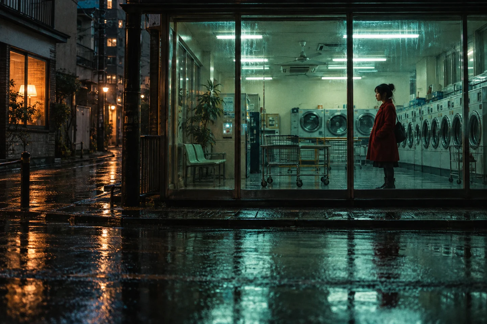

OVERTURE
A GOOD FILMIS ONLY THE BEGINNING.

Some stories stay with you.
Discover the films ↓
Discover the films ↓
NEW VOICES. LONG AFTERIMAGES.
For the feeling
that follows you home.
CHOOSE A FRAME
Find your next film ↗LAST LIGHTSCROLL TO ENTER ↓
THE PROGRAMME / THREE INVENTED WORLDSTake a seat.
Take a seat.
Go somewhere.
Three imagined films. Three ways of seeing. Read a film note and build a programme of your own.
Showing all three films.
The lights come up.
The conversation begins.
Cinema gives us something to sit with, and something to share. Make a little space for a different point of view.